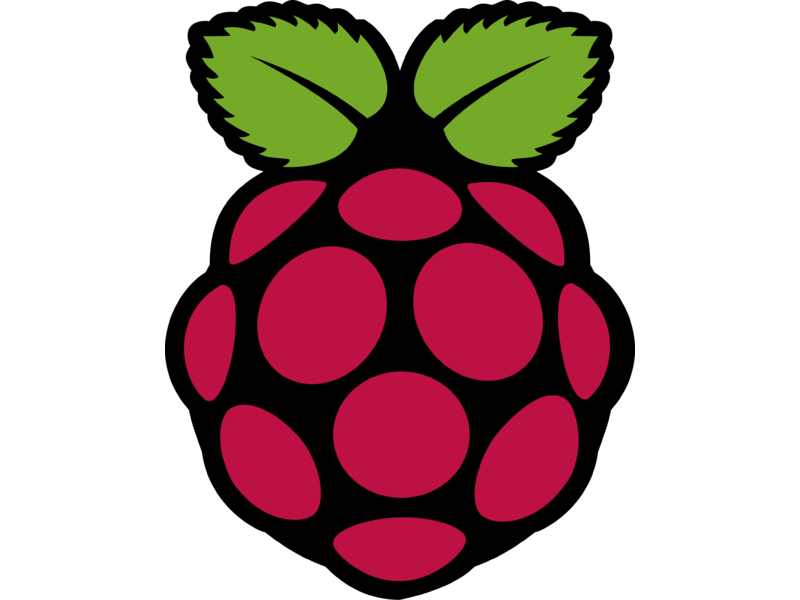
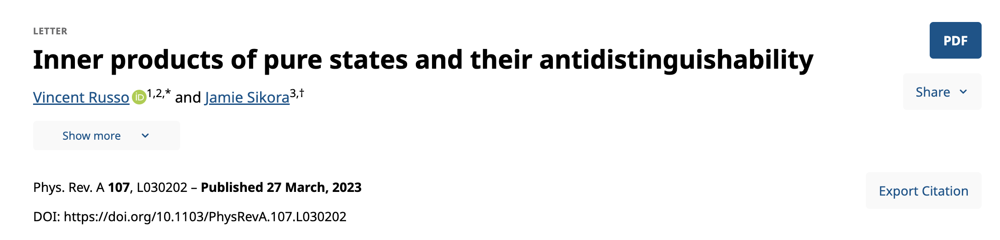
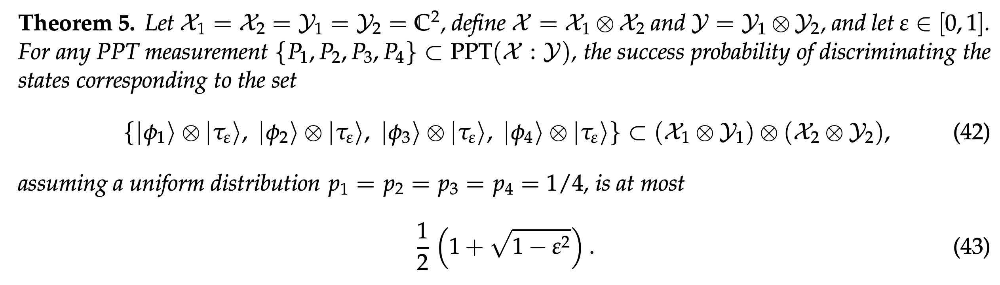
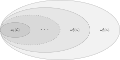
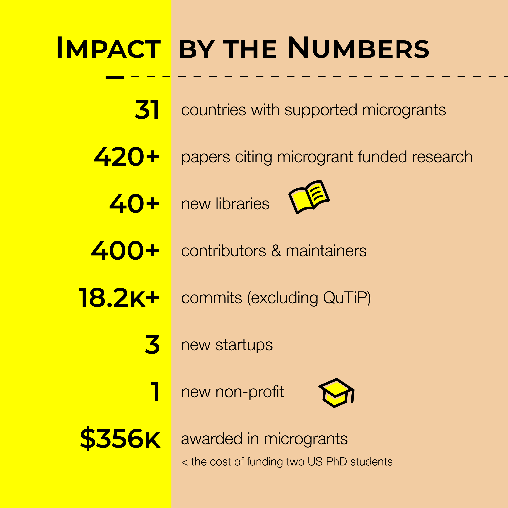

2025-07-02
|toqito⟩ Theory of quantum information toolkit
Open-source Python library for studying objects in quantum information.
Numerical tools to study problems about entanglement theory, nonlocal games, matrix analysis, and other aspects of quantum information often associated with computer science.
|toqito⟩Quantum states can be represented as density operators.
\[ \rho \succeq 0 \quad \text{and} \quad \text{Tr}(\rho) = 1 \]
A quantum state is entangled if it is not separable. A separable state can be written as \[ \rho = \sum_{i} p_i \rho_i^{A} \otimes \rho_j^{B} \]
Computability
Separability testing is NP-hard.
\[ \min \sum_{i=1}^k p_i \text{Tr}(M_i \rho_i) \]
\[ \sum_{i=1}^k \text{Tr}(M_i \rho_i) = 0 \]
Let \(S = \{|\psi_1\rangle, \ldots, |\psi_n\rangle \} \subset \mathbb{C}^n\) be a set of \(n\) pure quantum states each of dimension \(n\). Then \(S\) is antidistinguishable when
\[ |\langle \psi_i | \psi_j \rangle | \leq \frac{n-2}{n-1} \]
for all \(i \neq j\).
false.not antidistinguishable.import numpy as np
from toqito.rand import random_states
from toqito.state_props import is_antidistinguishable
S = random_states(n=4, d=4)
threshold = (len(S) - 2) / (len(S) - 1)
for i in range(len(S)):
for j in range(i + 1, len(S)):
ip_val = np.abs(np.trace(S[i].conj().T @ S[j]))
if ip_val > threshold and not is_antidistinguishable(S):
print("Violation found!")

\[ \max \sum_{i=1}^k p_i \text{Tr}(M_i \rho_i) \]
\[ \max_{M_i \in \text{PPT}} \sum_{i=1}^k p_i \text{Tr}(M_i \rho_i) \]
\[ S = \{ \Phi^+ \otimes \Phi^+, \Phi^- \otimes \Psi^-, \Psi^+ \otimes \Psi^-, \Psi^- \otimes \Psi^- \} \]
Resource-assisted state discrimination
Question: How much does entanglement help for distinguishing quantum states?
\[ \text{Resource state: } |\tau\rangle = \sqrt{\frac{1 + \epsilon}{2}}|00 \rangle + \sqrt{\frac{1 - \epsilon}{2}}|11\rangle \]
\(\epsilon \in [0,1]\) (\(\epsilon=0\): maximally entangled, \(\epsilon=1\): product)
\[ \{ |\psi_1\rangle \otimes |\tau\rangle, \ldots, |\psi_n\rangle \otimes |\tau\rangle \} \]
Resource-assisted state discrimination

import numpy as np
from toqito.states import bell
from toqito.state_opt import ppt_distinguishability
eps = 0.5
e0, e1 = np.array([[[1], [0]]), np.array([[0], [1]])
tau = np.sqrt((1+eps)/2) * e0 + np.sqrt((1-eps) / 2) * e1
states = [np.kron(bell(0), tau), np.kron(bell(1), tau), np.kron(bell(2), tau), np.kron(bell(3), tau)]
ppt_distinguishability(states, dimensions=[2, 2, 2, 2], subsystems=[0, 2])
1 / 2 * (1 + np.sqrt(1 - eps**2))The players: Alice and Bob
Play cooperatively. Cannot communicate once game begins.
The referee
Gives questions. Takes answers. Decides fate.
\[ \omega(G) \leq \omega_{\text{c}}(G) \leq \omega^*(G) \leq \omega_{\text{ns}}(G) \]
NPA hierarchy: Hierarchy of SDPs that converges to \(\omega_{\text{c}}(G)\).

The FFL (Fortnow, Feige, Lovasz) game: \[ a \lor x = b \lor y \]
\[ \begin{equation} \pi(0,0) = \pi(0,1) = \pi(1,0) = \frac{1}{3}, \ \pi(1,1) = 0 \\ \end{equation} \]
\[ \begin{equation} \begin{aligned} (x,y) &\in \{0,1\} \times \{0,1\} \\ (a,b) &\in \{0,1\} \times \{0,1\} \end{aligned} \end{equation} \]
import numpy as np
from toqito.nonlocal_games.nonlocal_game import NonlocalGame
num_alice_in, num_alice_out = 2, 2
num_bob_in, num_bob_out = 2, 2
prob_mat = np.array([[1/3, 1/3], [1/3, 0]])
pred_mat = np.zeros((num_alice_out, num_bob_out, num_alice_in, num_bob_in))
for a_alice in range(num_alice_out):
for b_bob in range(num_bob_out):
for x_alice in range(num_alice_in):
for y_bob in range(num_bob_in):
if (a_alice or x_alice) != (b_bob or y_bob):
pred_mat[a_alice, b_bob, x_alice, y_bob] = 1
ffl = NonlocalGame(prob_mat, pred_mat)
ffl = NonlocalGame(prob_mat, pred_mat)
print(f"Classical value: {ffl.classical_value()}")
print(f"Quantum value (lower bound): {ffl.quantum_value_lower_bound()}")
print(f"Quantum value (upper bound): {ffl.commuting_measurement_value_upper_bound()}")
print(f"Non-signaling value: {ffl.nonsignaling_value()}")Games where the winning condition uses the \(\oplus\) operation.
Terminology
Values of XOR games can be solved directly. Not true in general for nonlocal games
\[ a \oplus b = x \land y \]
# Calculate the classical and quantum value of the CHSH game.
import numpy as np
from toqito.nonlocal_games.xor_game import XORGame
# The probability matrix.
prob_mat = np.array([[1/4, 1/4], [1/4, 1/4]])
# The predicate matrix.
pred_mat = np.array([[0, 0], [0, 1]])
# Define CHSH game from matrices.
chsh = XORGame(prob_mat, pred_mat)
chsh.classical_value() # 0.75
chsh.quantum_value() # 0.8535533from toqito.nonlocal_games.extended_nonlocal_game (
import ExtendedNonlocalGame
)
from toqito.states import mutually_unbiased_basis
import numpy as np
num_in, num_out = 4, 3
prob_mat = np.eye(num_in) / num_in
mubs = mutually_unbiased_basis(num_out)
pred_mat = np.zeros(
(num_out, num_out, num_out, num_out, num_in, num_in), dtype=complex
)
for i, basis in enumerate(mubs):
for j, psi in enumerate(basis):
pred_mat[..., j, j, i, i] = psi @ psi.conj().T
g_mub = ExtendedNonlocalGame(prob_mat, pred_mat)
print(f"Unentangled value: {g_mub.unentangled_value()}")
print(f"Quantum value: {g_mub.quantum_value_lower_bound()}")Apply for a microgrant! 
Approach:
Apply @ unitary.foundation/grants
We want you!
|toqito⟩repo:
Thank you!